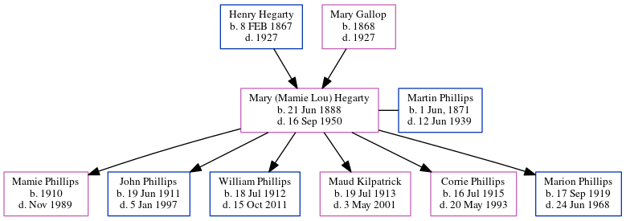

Mary Phillips (née Hegarty) 1888 - 1950
[ Home ] | [ Calendar ] | [ Surnames Index ] | [ Census Index ] | [ Family History ]The 2nd of 3 children of Henry Hegarty (a worked at cyclorama in grant park) and Mary Gallop, Mary Hegarty, the great-grandmother of Michele Copp (née Phillips), was born in , Ireland on Jun 21, 18881,2,3,4,5,6 and married Martin Phillips (with whom she had 6 children: Mamie, John A, William Hiram, Maud, Corrie Lorena and Marion Eugene) in Fulton, Georgia, USA on Jul 28, 19098.
During her life, she was living in Atlanta Ward 3, Georgia in 190010; in Atlanta Ward 3, Fulton, Georgia in 19101 and in 19202; in Atlanta, Fulton, Georgia in 19303 and in 19354; in Atlanta, Georgia, USA in 193811; in Atlanta, Georgia on Apr 1, 19404 following the death of her husband on Jun 12, 1939 and in 195012; in Atlanta, Georgia13; and in Fulton5. she arrived in 1884.
She died on Sep 16, 1950 in Atlanta, GA, USA5,6,7 and was buried in Sacred Heart of Jesus, Georgia on Sep 18, 19507,9.
Parents
- Henry J. was born on Feb 8, 1867
- Mary was born in 1868
Children
- Mamie was born in 1910
- John A was born on Jun 19, 1911
- William Hiram was born on Jul 18, 1912
- Maud was born on Jul 19, 1913
- Corrie Lorena was born on Jul 16, 1915
- Marion Eugene was born on Sep 17, 1919
Citations
- 1910 United States Federal Census Online publication - Provo, UT, USA: The Generations Network, Inc., 2006. For details on the contents of the film numbers, visit the following NARA web page: NARA.Original data - United States of America, Bureau of the Census. Thirteenth Census of the Unit
- 1920 United States Federal Census Online publication - Provo, UT, USA: MyFamily.com, Inc., 2005. For details on the contents of the film numbers, visit the following NARA web page: NARA. Note: Enumeration Districts 819-839 on roll 323 (Chicago City.Original data - United States of America
- 1930 United States Federal Census Online publication - Provo, UT, USA: MyFamily.com, Inc., 2002.Original data - United States of America, Bureau of the Census. Fifteenth Census of the United States, 1930. Washington, D.C.: National Archives and Records Administration, 1930. T626, 2,667 rol
- 1940 United States Federal Census Ancestry.com Operations, Inc. (Age: 52; Marital Status: Widowed; Relation to Head of House: Head)
- Georgia Deaths, 1919-98 Online publication - Provo, UT, USA: The Generations Network, Inc., 2001.Original data - State of Georgia. Indexes of Vital Records for Georgia: Deaths, 1919-1998. Gerogia, USA: Georgia Heatlh Department, Office of Vital Records, 1998.Original data: State
- OneWorldTree Online publication - Provo, UT, USA: MyFamily.com, Inc.
- U.S., Find A Grave Index, 1600s-Current Ancestry.com Operations, Inc.
- Georgia, Marriage Records From Select Counties, 1828-1978 Ancestry.com Operations, Inc.
- Atlanta, Georgia, U.S., Catholic Archdiocese of Atlanta Sacramental Records, 1840-1980 Ancestry.com Operations, Inc.
- 1900 United States Federal Census Online publication - Provo, UT, USA: MyFamily.com, Inc., 2004.Original data - United States of America, Bureau of the Census. Twelfth Census of the United States, 1900. Washington, D.C.: National Archives and Records Administration, 1900. T623, 1854 rolls. (Marital Status: Single; Relation to Head: Daughter)
- U.S., City Directories, 1822-1995 Ancestry.com Operations, Inc. (Original sources vary according to directory. The title of the specific directory being viewed is listed at the top of the image viewer page. Check the directory title page image for full title and publication information.)
- 1950 United States Federal Census Ancestry.com Operations, Inc. (Department of Commerce. Bureau of the Census. 1913-1/1/1972. Population Schedules for the 1950 Census, 1950 - 1950. Washington, DC: National Archives at Washington, DC. Population Schedules for the 1950 Census, 1950 - 1950. NAID: 43290879. Records of the Bureau of the Census, 1790 - 2007, Record Group 29. National Archives at Washington, DC., Washington, DC.)
- U.S., World War II Draft Cards Young Men, 1940-1947 Ancestry.com Operations, Inc. ( View Sources.) (Relation to Head: Mother)
Family Tree
Generated by ged2site. Last updated on Jun 6, 2024